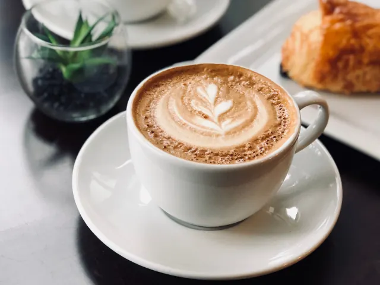

Partnerbijdrage
Het belang van goede koffie op het werk
Gepubliceerd op 16 februari 2026
Onderdeel van de gids Ondernemen in Nijmegen

Nijmegen is typisch een stad van koffiedrinkers. Niet alleen zijn er diverse lokale horecabedrijven en speciaalzaken waar een goede kop koffie de spil vormt van het bedrijfsconcept, ook is hier een koffiebranderij gevestigd die in de afgelopen tien jaar een respectabele positie heeft verworven binnen de koffiebranche. De lat ligt dus hoog in Nijmegen, want we zijn allemaal gewend aan een echt goede kop koffie. Voor werkgevers is dat een belangrijk gegeven, want zij moeten hier goed op inspelen door ook op het werk koffie van goede kwaliteit te verstrekken.
Onderzoeken naar het effect van koffie
Regelmatig worden onderzoeken gehouden naar het effect van goede koffie op de werkvloer. Uit een landelijk onderzoek blijkt dat bijna de helft van alle ondervraagde werknemers aangeeft productiever te zijn met een goede kop koffie op het werk. Meer dan de helft (58%) meent zelfs dat koffie hun plezier in het werk verhoogt. Opvallend: het merendeel van de Nederlandse werknemers geeft de koffie op het werk een voldoende (rapportcijfer 7), maar voor één op de acht mensen is de koffie onvoldoende van kwaliteit. Dergelijke onderzoeken zijn er niet op lokaal niveau, dus hoe het precies is gesteld met de kwaliteit van de koffie op het werk in Nijmegen, blijft de grote vraag. Drinkt het personeel bijvoorbeeld MAAS koffie uit een professionele koffiemachine, of moeten zij zich redden met gebrekkige faciliteiten? Veel hangt natuurlijk af van de keuzes die een werkgever maakt.
Het voordeel van een goede koffiemachine
Breng je een bezoek aan één van de gerenommeerde koffiebars in Nijmegen, dan weet je één ding zeker: je geniet van een perfecte kop koffie, waaraan veel zorg is besteed. Werk je bij een bedrijf waar koffie met de hand wordt gezet, dan moet je maar afwachten welke collega het geregeld heeft. In die bedrijven varieert de kwaliteit van de koffie met de dag. Juist bij een koffiemachine voor het bedrijf heb je dat probleem niet, daar is de koffie altijd van constante kwaliteit. Je weet dus precies wat je krijgt en, afhankelijk van het type machine, kies je de variant die jou het meeste aanspreekt. Bovendien kun je als bedrijf in goed overleg met je werknemers de koffiebonen van jouw keuze inkopen. Op die manier zal iedereen zo optimaal mogelijk kunnen genieten van het dagelijkse kopje koffie. Immers: met goede koffie houd je als werkgever het personeel tevreden!

Terug naar de beginpagina
BEKIJKKoffiebars in Nijmegen
Zin om te beginnen? In onze bedrijvengids vind je alle 5 koffiebars in Nijmegen, met openingstijden, kenmerken en een kaart.
Bekijk alle 5 koffiebars in Nijmegen
Heb je zelf een koffiebar? Laat je hier uitlichten.